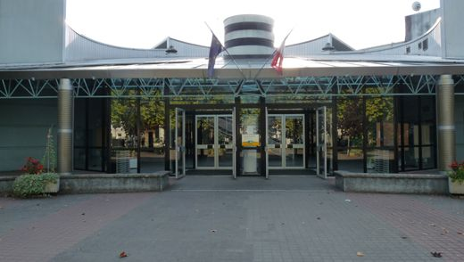
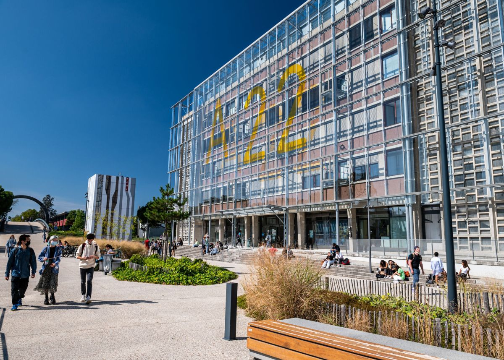
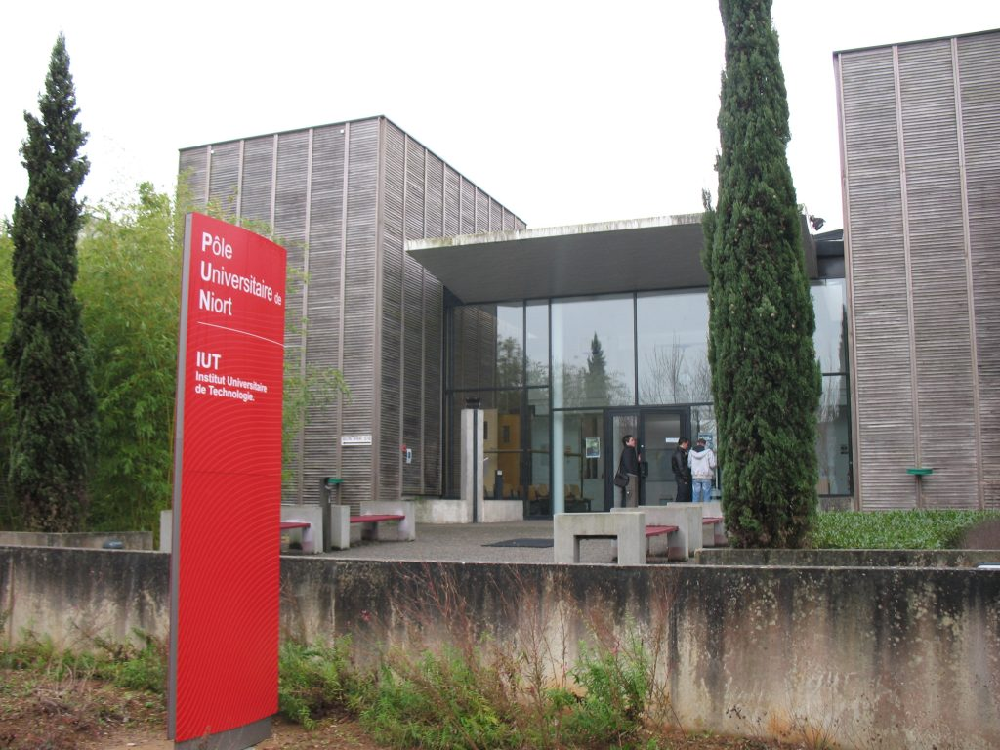

Baccalauréat Scientifique
Spécialité Mathématiques et Physique-Chimie. Mon parcours au lycée m’a permis de consolider une base solide en sciences exactes, avec un fort intérêt pour la logique, les raisonnements mathématiques et les phénomènes physiques.
Cette formation m’a permis d’acquérir de la rigueur, une capacité d’analyse, ainsi qu’une méthode de travail structurée, utile dans toutes les disciplines scientifiques.

Licence 1 Mathématiques
Université de BordeauxAu cours de cette première année de Licence en Mathématiques, j’ai approfondi mes connaissances fondamentales en algèbre, analyse et logique. Cette formation exigeante m’a permis de développer rigueur, autonomie et méthode dans la résolution de problèmes complexes.
J’ai également été initié à la programmation scientifique et à l’utilisation d’outils formels pour modéliser des situations variées, ce qui a suscité mon intérêt pour l'application concrète des données.

Formation 42
Campus AngoulêmeEn intégrant l’école 42 à Angoulême, j’ai plongé dans une pédagogie innovante, fondée sur le projet et l’autonomie. La « piscine » m’a permis d’acquérir des bases solides en développement C et en algorithmique, tout en développant ma capacité à apprendre par moi-même.
Cette immersion intensive dans un environnement orienté code et résolution de problèmes m’a appris à repousser mes limites, à persévérer et à collaborer efficacement en équipe (peer-learning).

BUT Science des Données
IUT de NiortAprès plusieurs expériences académiques, j’ai fait le choix de m’orienter vers la science des données. Cette formation me permet d’explorer un champ passionnant à la croisée de l’informatique, des statistiques et de l’analyse décisionnelle.
J’y développe des compétences techniques en programmation, en modélisation statistique, en visualisation de données et en gestion de bases de données. Je travaille aussi sur des projets concrets, en lien direct avec les problématiques réelles des entreprises.
